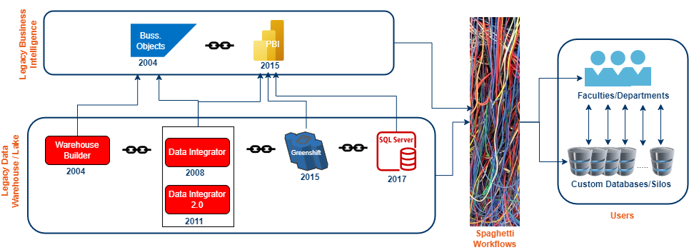
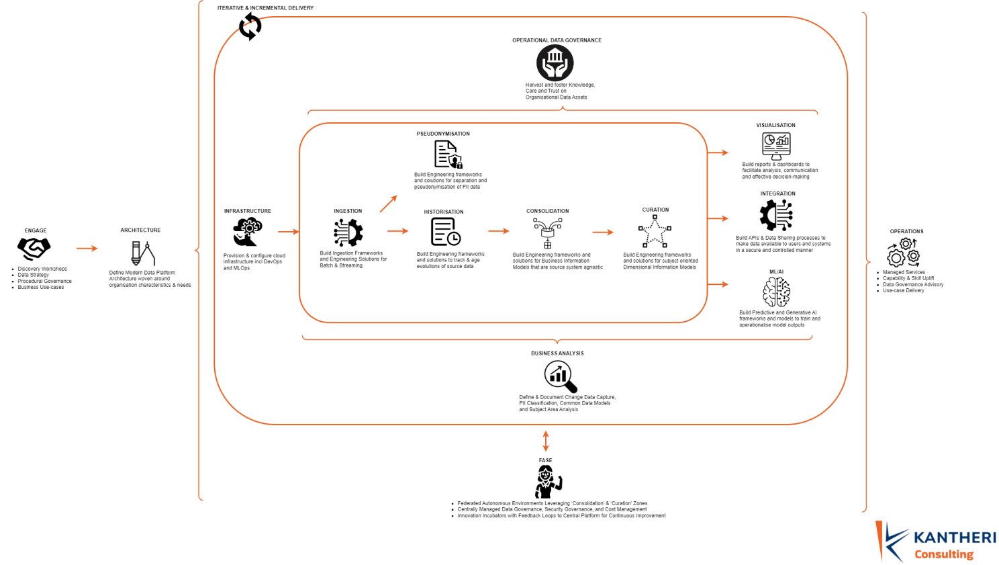

Modern Cloud Data & Analytics Platforms are inherently complex due to their multifaceted architecture, governance, integration, engineering, and security requirements. When setting them up for Tertiary Education Providers (TEP), this complexity is amplified by the unique demands and challenges associated with TEP environments. Addressing these complexities requires a tailored approach that aligns with the specific needs of these institutions. KANTHERI Consulting (KC) aims to illustrate a comprehensive strategy and approach to establish an enterprise-scale modern data & analytics platform using a short case study of A Large Tertiary Education Provider (ALTEP) in Australia. This case study will help you understand a comprehensive and successful approach to establishing a modern enterprise cloud data & analytics platform.
Begin by understanding the business
Understanding the business before establishing a modern data & analytics platform is crucial. It ensures alignment with strategic objectives, tailored solutions, enhanced user engagement, and effective risk management. This approach transforms the data platform into a strategic asset that drives business success and fosters innovation. TEPs are not merely centers of learning but also hubs of innovation, cultural enrichment, and social influence. These institutions embody complex ecosystems, given their multifaceted roles in society and a diverse array of stakeholders, including students, faculty, alumni, industry partners, governmental bodies, and the broader community. Each of these groups contributes uniquely to advancing the TEP's vision across education, research, and community engagement. Furthermore, TEPs navigate complex financial landscapes, drawing from sources like tuition, grants, and donations to support their educational facilities, research endeavors, and scholarship programs. TEPs operate with a long-term vision, aligning strategic plans with sustainability, ethical practices, and inclusivity, aiming to create a holistic environment that fosters growth, innovation, and societal progress. ALTEP exemplifies the concept of a TEP as an ecosystem. With an annual operating budget exceeding $2 billion, ALTEP serves over 65,000 students and employs 12,000 staff members across its eight campuses worldwide. These campuses collectively house over 200 buildings dedicated to various academic, research, and community functions. ALTEP conducts research across 150 different fields, highlighting its extensive contribution to knowledge and innovation. To enable informed decision-making and cultivate overall data maturity supported by a modern data & analytics platform, it is vital to tailor the platform to the unique characteristics, aspirations, and strengths of ALTEP.Evaluate existing data practices
Over the preceding two decades, the data landscape grew organically without strategic direction, resulting in ALTEP's data ecosystem becoming intricate and disjointed. The central Business Intelligence (BI) team, tasked with enterprise-wide reporting, struggled under the weight of managing multiple data platforms rife with duplicated data. This duplication complicated workflows, burdening the BI team with a tangled web of redundant processes spanning various departments. These departments operated independently, using diverse data and technology setups for managing, analysing, and visualising data, with conflicting data definitions between departments and often deviating from the enterprise reporting standards. Consequently, trust in the data among senior stakeholders eroded. This lack of coordination and strategic direction was also evident in the central BI team's repeated but unsuccessful efforts to replace legacy platforms with newer ones. Consequently, both the old and new systems continued to coexist, resulting in a total of six different BI platforms. This mishmash exacerbated the BI team's challenges. Confronted with substantial data landscape issues, ALTEP acknowledged the imperative to mitigate information delivery complexities and data security risks posed by legacy environments. With a vision of becoming an innovative and data-centric institution, the Chief Information Officer, in collaboration with the Director of Data & Analytics, set out to craft a comprehensive Data Strategy. Central to this strategy was the establishment of a resilient enterprise data platform, aimed at improving data management, fostering growth, and mitigating risks. In light of this context, it was crucial for KC to understand and address the underlying dynamics of existing data practices and to understand why previous attempts to decommission legacy BI environments had failed. To tackle this effectively, KC conducted extensive discovery workshops with departmental stakeholders to gather insights into their needs, expectations, and workflows, and performed in-depth technology design reviews of legacy BI implementations to identify gaps. Through this process, KC identified several challenges prevalent across various BI platforms at ALTEP. Listed below are some of them:- The evolution of Data & Analytics was tightly coupled with advancements, or the lack thereof, in certain legacy technologies.
- The current implementations lacked scalability due to restrictive licensing regimes.
- Data privacy considerations were inadequate and often an afterthought.
- None of the BI platforms offered built-in capabilities for advanced predictive analytics.
- Data management across departments was disorganised, lacked an operating model and governance, leading to information silos.
- Technology maintenance, including tasks like patching and upgrades, was frequent, cumbersome, and a massive operational overhead.
- Despite early migrations of legacy BI implementations to popular cloud platforms, they lacked a true cloud operating mindset in their implementation.
- Curated data products (reports, datasets, models, etc.) contained source system speak at the consumption layer, making them brittle and prone to issues as source systems evolved, resulting in constant code changes with little or no business value.

KC's Approach
Learning from previous decommissioning efforts, it became evident that solely viewing the challenge as a technological one would not suffice. These attempts failed due to the environment's complexity and perpetuated outdated inefficiencies. Legacy systems, not designed for modern infrastructure, resulted in subpar performance, scalability issues, high maintenance costs, and complex integration challenges. Additionally, they lacked robust security and compliance features, hindering innovation and user experience improvements. To avoid repeating these mistakes, the approach is to fundamentally overhaul, re-architect, and re-engineer the Enterprise Data & Analytics Platform with meticulous planning, commitment, and a principled approach. This involves steering clear of big-bang releases and adopting an iterative and incremental delivery model. The goal is to continuously deliver strategic value and operational needs for seamless, accurate, secure, and compliant data management, while maintaining stable foundations guided by architecture. Furthermore, the platform should aim to assist ALTEP in successfully decommissioning all legacy platforms while delivering enhanced functional and non-functional value to its user base. Leveraging decades of data & analytics experience and expertise, along with sustained innovation, has enabled KC to propose a comprehensive Modern Cloud Data & Analytics Platform leveraging Delta Architecture. KC's approach is seen as one of the earliest (Q3 2019) and most comprehensive in building Enterprise Lakehouse platforms in the region. Drawing from this experience, KC has architected & engineered the Modern Cloud Data & Analytics Platform at ALTEP. Following are some of the salient principles of the platform that KC has proposed:Separation of Storage & Compute:
Offering flexibility, scalability, performance optimisation, and fault tolerance, this principle addresses the license-driven and non-scalable storage and compute challenges of ALTEP legacy systems. It should be a fundamental principle of any modern data platform.Privacy by Design & Engineering:
Designing with data privacy in mind and embedding processes like Pseudonymisation and Forgettability through data engineering ensures compliance, builds trust, mitigates risks, and promotes transparency and accountability, crucial for handling PII data at ALTEP.Reduced Vendor-Proprietary Data Formats & Technology:
Leveraging open-source storage data formats and technology at the core of the platform to future-proof the platform ecosystem, promoting interoperability, flexibility, reduced vendor lock-in, scalability, and community support.Source System Agnosticism:
Aligning with industry or TEP data models in consumption layers ensures platform stability, flexibility, simplification, consistency, and maintainability while avoiding brittleness caused by source system vernacular.Federated Autonomous Self-Service Environments (FASEs):
Establishing autonomous, self-service environments for data consumption and analysis across various departments democratises innovation and value creation while maintaining centralised governance and security.Framework-Driven Data Engineering:
Ensuring standardisation, efficiency, collaboration, and operational cost optimisation by adopting a framework-driven engineering approach in building sustainable Modern Data Platforms, avoiding haphazard development practices and multiple code flavours.Operational Data Governance:
Implementing an actionable and operational data governance approach that harvests & fosters knowledge building, care, and trust in ALTEP data assets within the unified architecture of the Modern Data Platform, enhancing organisational data management practices.
